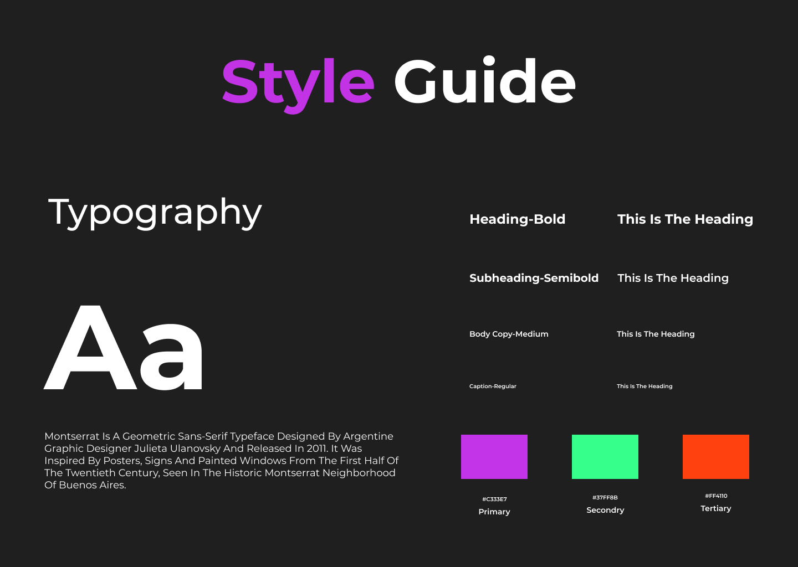

Project Overview
The aim of this project is to develop a smartwatch dating app that will help people connect with potential partners using their smartwatches. The app will be designed to provide a unique dating experience that leverages the unique features of smartwatches, such as their small form factor, always-on displays, and sensors. The app will be developed for both iOS and Android platforms, and will be designed to work seamlessly with all popular smartwatch models.
Goals
1. Compatibility: The app will be designed to work seamlessly with all popular smartwatch models, ensuring that it is accessible to a wide range of users.
2. Personalization: The app will be personalized to each user's preferences and interests, helping them find matches that are more likely to be compatible with them.
3. Safety and Privacy: The app will prioritize the safety and privacy of its users by implementing robust security measures, such as two-factor authentication, and enabling users to report and block other users if necessary.
Wireframes
I created the wireframes and polished through the feedbacks and came up with the best solutions for the brightest user experiences.
Seeingify Logo
Seeingify is a dating app functional on smart watches as well for better and faster user experience on go
Final Design
A simple and intuitive interface that is easy to navigate on a small screen and Consistent use of the color scheme, which includes shades of purple and green, to create a cohesive brand identity.

Style Guide
I used these colors because they are unique, eye-catching, romantic, high contrast, and modern, and can help create a positive and engaging user experience.

Takeaways
This project has been an exciting exploration into the world of smartwatch app design.This project proves that even in its compact form, wearable technology has the power to deliver personalized and captivating experiences. The big lesson here is that with some innovative design magic and a sprinkle of user engagement, we can turn something familiar into a whole new and surprisingly accessible experience